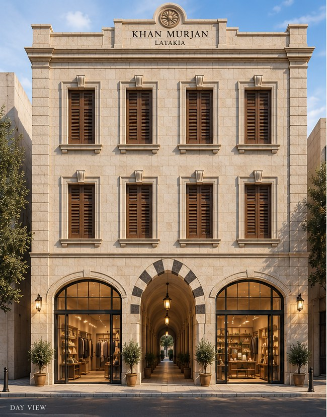
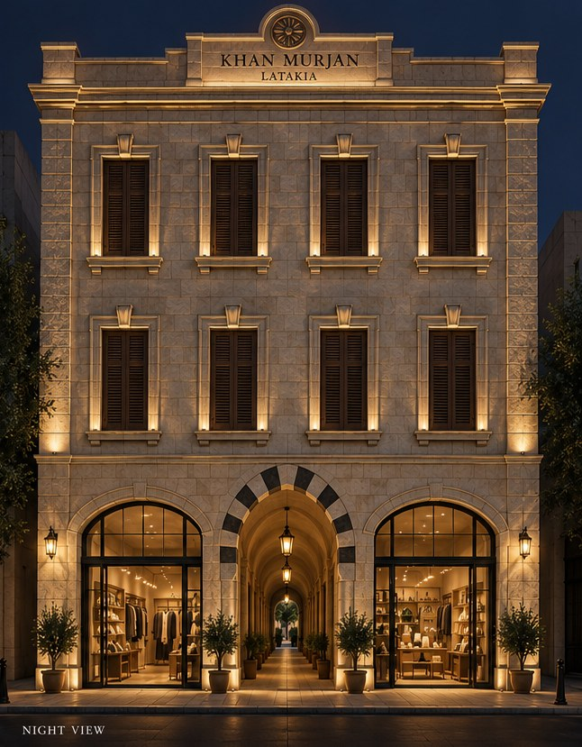
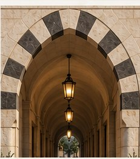
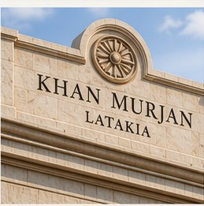
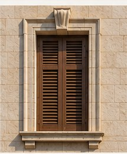
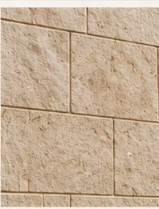

Shops along the passage
Two deep shops of 3.70 × 7.10 m face the street, one either side of the entrance. Behind them the passage runs back through the plot with smaller units down both sides. Floor to floor, 5.00 m.


Latakia · اللاذقية
Shops · Clinics · Community
Local tradition. Contemporary use. Timeless value.
A building that belongs to its street. Stone cut and laid the way Latakia has always laid it, opened by a passage that invites the city straight through the ground floor.
A tall ground floor of 5.00 m for the shops, two floors of 3.00 m above for the clinics, and a parapet that carries the name.

Two and a half metres wide and running the full twenty-one and a half metres of the plot, the passage is the building's reason for its plan. Shops line both sides of it. You do not enter a lobby — you walk into a street that happens to have a roof.
It is the one place the facade departs from its own restraint. The entrance arch alone carries ablaq, the alternating light and dark stone of the region, and it alone rises above the shop arches beside it.

Carved roundel and building name
Limestone ashlar

1.05 × 1.90 m opening
Moulded surround, projecting sill
Timber louvred shutters
2.50 m clear width
Springing +3.00, crown +4.80
Alternating voussoirs (ablaq)

Local limestone ashlar
0.42 m courses
Natural finish
Two deep shops of 3.70 × 7.10 m face the street, one either side of the entrance. Behind them the passage runs back through the plot with smaller units down both sides. Floor to floor, 5.00 m.
49 m² and 40 m² to the street, 44 m² and 44 m² to the rear. Each suite is a consulting room, a waiting area and a bathroom, off a central corridor lit from both ends.
Identical to the floor below. Eight suites in all, 177 m² of usable area on each floor with the stair and circulation core at its centre.
Drag to turn · scroll the page to orbit
Built to the drawing, not to an impression — every opening at its measured size and position.